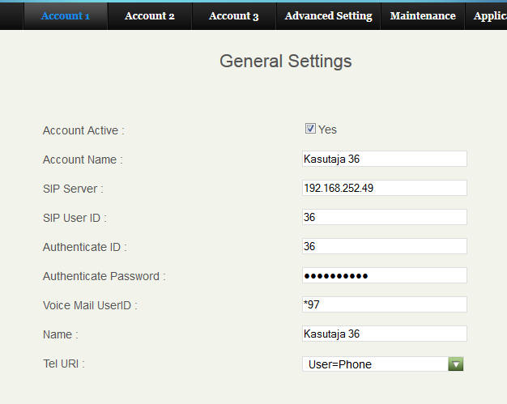
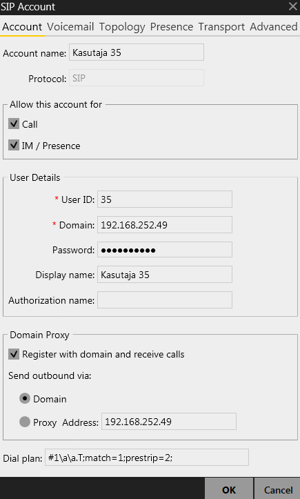
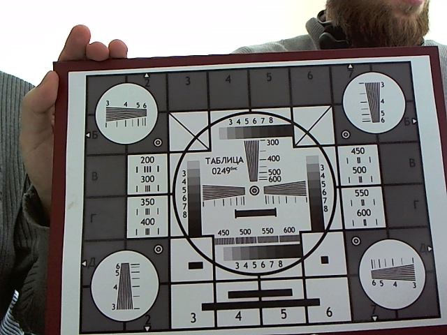
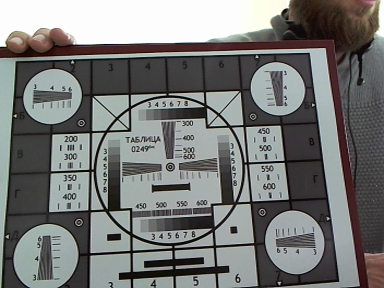
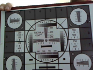
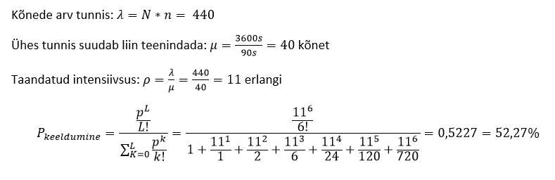

| Töö tegijate nimed: |
| Andrei Reinus |
| Lauri Teelem |
| Töö tegemise kuupäev: Sat Oct 4 10:08:14 2014 |
| Seadistamine | IP-telefon | Arvutitelefon |
| Telefoninumber | 36 | 35 |
| seadistuse ekraanipilt |  |  |
| Selgitada seadistuse eesmärke | Luua tark- ja raudvarapõhine telefonivõrk, kahe numbriga | |
Küsimus 2: Millise käsuga saab kumbki osapool kõne ajal videost loobuda?
Vastus:
IP: "Stop Video", PC: "Stop sending your video"
Küsimus 2: Kuidas töötab tingimusteta suunamine?
Vastus:
Kõik kõned suunatakse teisele numbrile
Küsimus 3: Kuidas töötab tingimustega suunamine?
Vastus:
Kui abonent on hõivatud siis suunatakse
Küsimus 2: Võrrelda video kvaliteeti Frame Rate: 5 frames/second ja Frame Rate: 15 frames/second.
Vastus:
Suurem Frame Rate annab sujuvama pildi
| Suurim võimalik | eraldusvõime hinnang | eraldusvõime | kaadrisagedus | sisu bitikiirus | Arvutada pakkimata video edastuskiirus |
| Parim kaader | 2592x1944 | 10 | 24 bpp * 2592px * 1944px * 10fps = 1209323520 bps = 1153,3 Mbps | 1209323520 bps / 8 = 151165440 B/s = 144,2 MB/s | |
 |
|||||
| VGA | eraldusvõime hinnang | eraldusvõime | kaadrisagedus | sisu bitikiirus | Arvutada pakkimata video edastuskiirus |
| Pilt on talutav | 640x480 | 30 | 24 bpp * 640px * 480px * 30fps = 221184000 bps = 210,9 Mbps | 221184000 bps / 8 = 27648000 B/s = 26,37 MB/s | |
|  | |||||
| CIF | eraldusvõime hinnang | eraldusvõime | kaadrisagedus | sisu bitikiirus | Arvutada pakkimata video edastuskiirus |
| 352x288 | 30 | 24 bpp * 352px * 288px * 30fps = 72990720 bps = 69,6 Mbps | 72990720 bps / 8 = 9123840 B/s = 8,7 MB/s | ||
|  | |||||
| QCIF | eraldusvõime hinnang | eraldusvõime | kaadrisagedus | sisu bitikiirus | Arvutada pakkimata video edastuskiirus |
| Joon | 176x144 | 30 | 24 bpp * 176px * 144px * 30fps = 18247680 bps = 17,4 Mbps | 18247680 bps / 8 = 2280960 B/s = 2,1 MB/s | |
|  | |||||
Abonentide arv N = 110
Välisliinide arv L = 6
Ühe abonendi poolt tunnis linna tehtava kõnede kesmine arv n = 4
Ühe kõne keskmine kestus sekundites t = 90

KIRJUTA KOKKUVÕTE JA JÄRELDUSED SIIA!